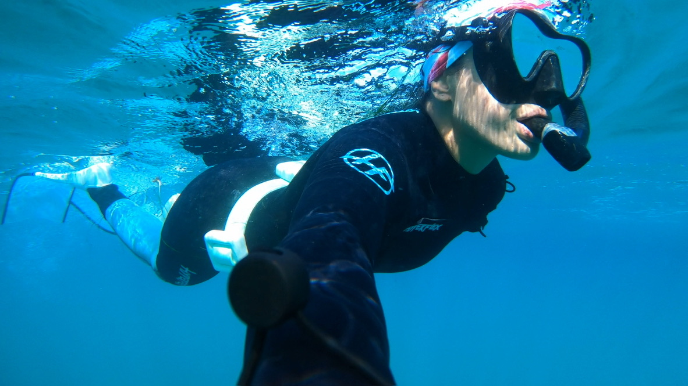
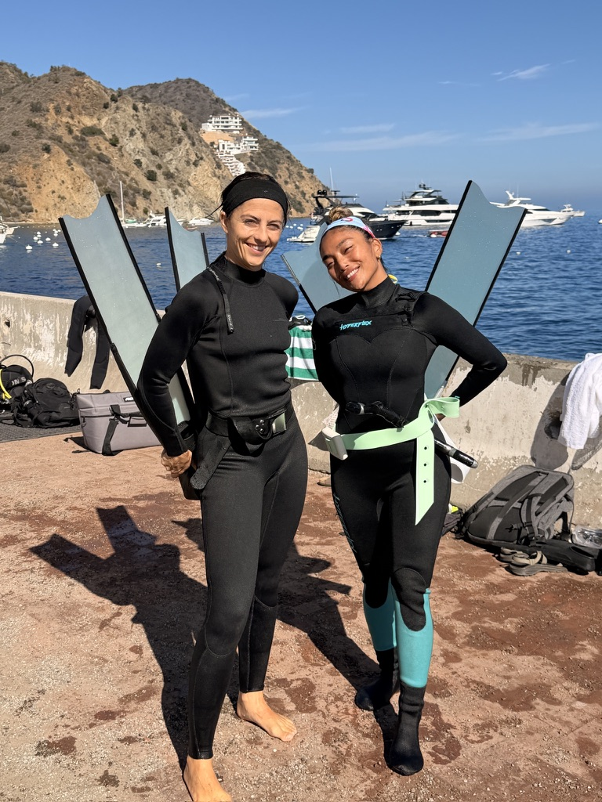

Photo of me out on a dive.
The ocean and its deep blue pals can seem intimidating until you meet them. Beneath the waves, distractions fade, your heartbeat slows, and the blue embraces you like an old friend. I made this guide to help you trade fear for curiosity. The ocean may not feel like home yet, but by the end of this guide, it will. One breath is all it takes to find out. Let's dive in!

Photo of me with my trusted dive buddy.
Here's how a typical dive day goes, from checking weather conditions to rinsing off your gear. Every step matters. If something feels off, come back to surface and rest.